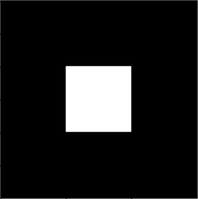

Tasks
Submission Procedure
- Create a jupyter notebook inside the Submission folder
-
Implement all Tasks chronologically (with an appropriate heading for
each task)
- Run your code, make sure it works
- If you're stuck, search thoroughly
- If you don't find anything, ask
- Rename the folder with YOUR NAME
- Submit in form
Task 1 - NumPy
Manually create a 300x300 pixel binary image using numpy arrays that looks like this and display it in your notebook using the displayImage function

Task 2 - Image concatenation
-
Load and Display the 3 images named concat#.jpg seperately at once using the openCV imshow() function. Don't forget the waitKey and destroyAllWindows lines
-
Create a new image by concatenating those 3 images side by side (1 being on the left, 3 right) into a single one. Display this image in the notebook using the displayImage function
Task 3 - Thresholding
Implement the TO_ZERO simple thresholding on the threshold.jpg image using NumPy arrays only . Display the original and thresholded image using the displayImages() function.
Task 4 - Feature Matching
- Implement feature matching using the two images named feature1 & feature2 or any two pictures that have a feature in common
- There are two algorithms one might choose to use. This task's objective is to learn how to read the documentation and extracting useful code you need to make things work.
So read the documentation here and display the features matched using two different ways.
Final Task - Drawing a bounding box
Create a mouse callback function on an image that allows a user to select two points (corners of the bounding box) on an image resulting in a red bounding box being drawn over the same image.
(Hint: Very similar to what we did in the session however instead of cropping, you'll use the two points to draw a rectangle. Search for rectangle drawing functions in opencv)